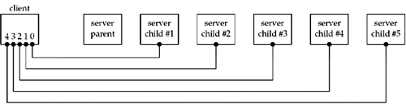
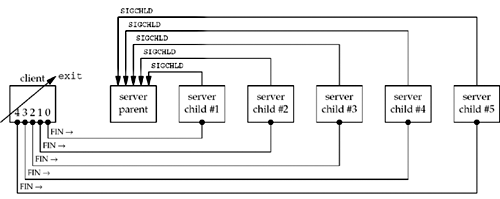

| [ Team LiB ] |
|
5.10 wait and waitpid FunctionsIn Figure 5.7, we called the wait function to handle the terminated child.
wait and waitpid both return two values: the return value of the function is the process ID of the terminated child, and the termination status of the child (an integer) is returned through the statloc pointer. There are three macros that we can call that examine the termination status and tell us if the child terminated normally, was killed by a signal, or was just stopped by job control. Additional macros let us then fetch the exit status of the child, or the value of the signal that killed the child, or the value of the job-control signal that stopped the child. We will use the WIFEXITED and WEXITSTATUS macros in Figure 15.10 for this purpose. If there are no terminated children for the process calling wait, but the process has one or more children that are still executing, then wait blocks until the first of the existing children terminates. waitpid gives us more control over which process to wait for and whether or not to block. First, the pid argument lets us specify the process ID that we want to wait for. A value of -1 says to wait for the first of our children to terminate. (There are other options, dealing with process group IDs, but we do not need them in this text.) The options argument lets us specify additional options. The most common option is WNOHANG. This option tells the kernel not to block if there are no terminated children. Difference between wait and waitpidWe now illustrate the difference between the wait and waitpid functions when used to clean up terminated children. To do this, we modify our TCP client as shown in Figure 5.9. The client establishes five connections with the server and then uses only the first one (sockfd[0]) in the call to str_cli. The purpose of establishing multiple connections is to spawn multiple children from the concurrent server, as shown in Figure 5.8. Figure 5.8. Client with five established connections to same concurrent server. Figure 5.9 TCP client that establishes five connections with server.tcpcliserv/tcpcli04.c
1 #include "unp.h"
2 int
3 main (int argc, char **argv)
4 {
5 int i, sockfd[5];
6 struct sockaddr_in servaddr;
7 if (argc != 2)
8 err_quit ("usage: tcpcli <IPaddress>";
9 for (i = 0; i < 5; i++) {
10 sockfd[i] = Socket (AF_INET, SOCK_STREAM, 0);
11 bzero (&servaddr, sizeof (servaddr));
12 servaddr.sin_family = AF_INET;
13 servaddr.sin_port = htons (SERV_PORT);
14 Inet_pton (AF_INET, argv[1], &servaddr.sin_addr);
15 Connect (sockfd[i], (SA *) &servaddr, sizeof (servaddr));
16 }
17 str_cli (stdin, sockfd[0]); /* do it all */
18 exit(0);
19 }
When the client terminates, all open descriptors are closed automatically by the kernel (we do not call close, only exit), and all five connections are terminated at about the same time. This causes five FINs to be sent, one on each connection, which in turn causes all five server children to terminate at about the same time. This causes five SIGCHLD signals to be delivered to the parent at about the same time, which we show in Figure 5.10. Figure 5.10. Client terminates, closing all five connections, terminating all five children. It is this delivery of multiple occurrences of the same signal that causes the problem we are about to see. We first run the server in the background and then our new client. Our server is Figure 5.2, modified to call signal to establish Figure 5.7 as a signal handler for SIGCHLD.
The first thing we notice is that only one printf is output, when we expect all five children to have terminated. If we execute ps, we see that the other four children still exist as zombies.
PID TTY TIME CMD
20419 pts/6 00:00:00 tcpserv03
20421 pts/6 00:00:00 tcpserv03 <defunct>
20422 pts/6 00:00:00 tcpserv03 <defunct>
20423 pts/6 00:00:00 tcpserv03 <defunct>
Establishing a signal handler and calling wait from that handler are insufficient for preventing zombies. The problem is that all five signals are generated before the signal handler is executed, and the signal handler is executed only one time because Unix signals are normally not queued. Furthermore, this problem is nondeterministic. In the example we just ran, with the client and server on the same host, the signal handler is executed once, leaving four zombies. But if we run the client and server on different hosts, the signal handler is normally executed two times: once as a result of the first signal being generated, and since the other four signals occur while the signal handler is executing, the handler is called only one more time. This leaves three zombies. But sometimes, probably dependent on the timing of the FINs arriving at the server host, the signal handler is executed three or even four times. The correct solution is to call waitpid instead of wait. Figure 5.11 shows the version of our sig_chld function that handles SIGCHLD correctly. This version works because we call waitpid within a loop, fetching the status of any of our children that have terminated. We must specify the WNOHANG option: This tells waitpid not to block if there are running children that have not yet terminated. In Figure 5.7, we cannot call wait in a loop, because there is no way to prevent wait from blocking if there are running children that have not yet terminated. Figure 5.12 shows the final version of our server. It correctly handles a return of EINTR from accept and it establishes a signal handler (Figure 5.11) that calls waitpid for all terminated children. Figure 5.11 Final (correct) version of sig_chld function that calls waitpid.tcpcliserv/sigchldwaitpid.c
1 #include "unp.h"
2 void
3 sig_chld(int signo)
4 {
5 pid_t pid;
6 int stat;
7 while ( (pid = waitpid(-1, &stat, WNOHANG)) > 0)
8 printf("child %d terminated\n", pid);
9 return;
10 }
Figure 5.12 Final (correct) version of TCP server that handles an error of EINTR from accept.tcpcliserv/tcpserv04.c
1 #include "unp.h"
2 int
3 main(int argc, char **argv)
4 {
5 int listenfd, connfd;
6 pid_t childpid;
7 socklen_t clilen;
8 struct sockaddr_in cliaddr, servaddr;
9 void sig_chld(int);
10 listenfd = Socket (AF_INET, SOCK_STREAM, 0);
11 bzero (&servaddr, sizeof(servaddr));
12 servaddr.sin_family = AF_INET;
13 servaddr.sin_addr.s_addr = htonl(INADDR_ANY);
14 servaddr.sin_port = htons(SERV_PORT);
15 Bind(listenfd, (SA *) &servaddr, sizeof(servaddr));
16 Listen(listenfd, LISTENQ);
17 Signal (SIGCHLD, sig_chld); /* must call waitpid() */
18 for ( ; ; ) {
19 clilen = sizeof(cliaddr);
20 if ( (connfd = accept (listenfd, (SA *) &cliaddr, &clilen)) < 0) {
21 if (errno == EINTR)
22 continue; /* back to for() */
23 else
24 err_sys("accept error");
25 }
26 if ( (childpid = Fork()) == 0) { /* child process */
27 Close(listenfd); /* close listening socket */
28 str_echo(connfd); /* process the request */
29 exit(0);
30 }
31 Close (connfd); /* parent closes connected socket */
32 }
33 }
The purpose of this section has been to demonstrate three scenarios that we can encounter with network programming:
The final version of our TCP server (Figure 5.12), along with the SIGCHLD handler in Figure 5.11, handles all three scenarios. |
| [ Team LiB ] |
|